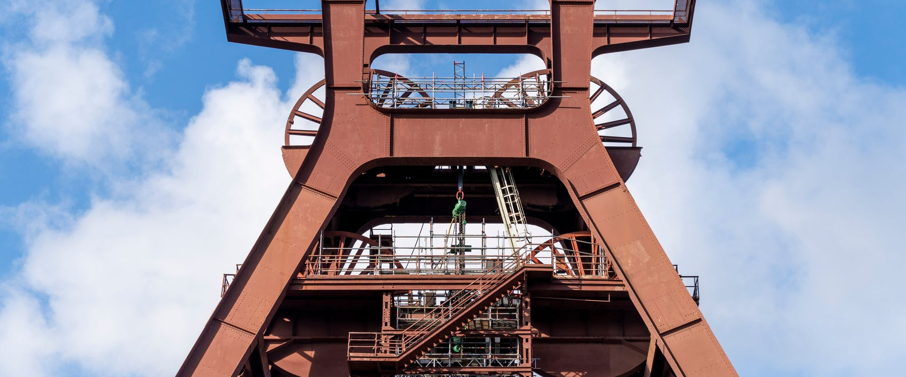
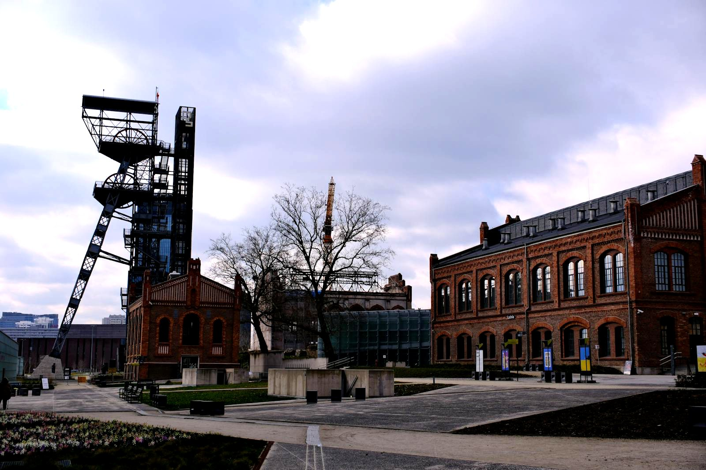
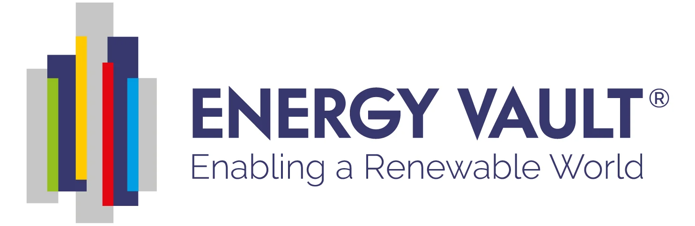

सुविकल्प: Mine Repurposing Tool
Select factors and sub-factors to discover suitable repurposing options for your mining site



Project concept, strategic rationale, site suitability assessment and indicative scales for gravity battery / GES development on closed coal mine infrastructure.
This concept proposes the development of a Gravity Battery / Gravity Energy Storage System (GES) as a mine-closure repurposing project. The objective is to convert suitable closed, abandoned, discontinued, or end-of-life mine infrastructure into a long-duration energy storage asset that can support grid stability, renewable energy integration, mine-area redevelopment, post-closure livelihood creation, and long-term clean-energy transition.
A gravity battery stores electricity by using surplus power to lift a heavy mass — such as modular weights, mine-compatible blocks, or granular material — to a higher elevation. When power is required, the mass is lowered in a controlled manner, driving a motor-generator system to produce electricity. For mine repurposing, the most relevant configurations are:
Unlike electrochemical battery storage, gravity storage does not depend on lithium-ion cells for the core energy-storage medium. The storage value comes from gravitational potential energy, governed by the mass lifted, vertical height available, and system efficiency. Research on abandoned mine shafts has identified their potential for suspended-weight gravity storage, while recent studies on UGES propose using decommissioned mines as storage reservoirs for bulk material.
This note is intended as an early-stage concept and structuring framework — not as a final DPR, tender, feasibility report, or implementation document. It is meant to support internal decision-making, project screening, mine-closure planning, stakeholder discussion, feasibility preparation, approval mapping, and procurement strategy.
Gravity energy storage is emerging as a potential long-duration storage option for locations where vertical height, existing mine shafts, pits, underground voids, hoisting infrastructure, grid connection, or renewable-energy redevelopment potential are available. For mine owners, it may create a productive post-mining use for land and infrastructure that would otherwise require closure, guarding, monitoring, and long-term safety management.
A gravity battery project may be considered for one or more of the following strategic purposes:
Key strategic benefits include:
The following matrix provides a structured checklist for assessing the suitability of the proposed site for the selected repurposing option. It identifies the key physical, technical, environmental, infrastructure, legal, and owner-side readiness parameters that should be reviewed before the project is advanced to the next stage of development. The purpose of this matrix is to help the project owner understand existing site conditions, technical requirements, potential constraints, and preparatory actions required before feasibility studies, approvals, or tendering are initiated.
| Category | Sub-category | What to assess | Why it matters |
|---|---|---|---|
| Site / Land | Mine closure status | Active, discontinued, abandoned, temporarily closed, finally closed, or under closure plan | Determines legal permissibility, safety obligations, and redevelopment pathway |
| Site / Land | Available land area | Shaft-collar area, surface yard, hoist-house area, transformer yard, access road, emergency space | Required for equipment, cranes, weights, power electronics, control systems, and emergency access |
| Site / Land | Indicative land requirement | ~0.5–2 ha for pilot/small systems; 2–5 ha for medium; 5+ ha for multi-shaft or hybrid surface systems | Shaft systems use vertical underground space; surface logistics still require land |
| Site / Land | Topography & access | Slope, bench stability, drainage, road access, crane access, flood risk | Affects civil works, installation, safety, and long-term O&M |
| Site / Land | Ground condition | Subsidence risk, filled ground, bearing capacity, old workings, voids, contamination | Critical for foundations, hoist structures, equipment pads |
| Mine infrastructure | Shaft availability | Shaft depth, diameter, lining, verticality, water ingress, obstruction, ventilation | Shaft depth and usable travel distance are central to stored energy capacity |
| Mine infrastructure | Shaft structural integrity | Lining condition, collar stability, shaft support, corrosion, deformation, rock mass condition | Determines whether shaft can safely host moving weights or bulk-material systems |
| Mine infrastructure | Hoisting infrastructure | Existing winder, headgear, sheaves, ropes, brakes, control systems, foundations, load rating | Reuse may reduce cost; old hoists may require replacement or certification |
| Mine infrastructure | Underground void / reservoir | Availability of underground galleries, stopes, shafts, or lower storage zones | Relevant for UGES concepts using sand or bulk material |
| Mine infrastructure | Mine water & drainage | Water level, inflow, pumping needs, flooding, corrosion risk | Water may damage mechanical/electrical systems and affect access and safety |
| Electrical interface | Grid connection point | Nearest substation, voltage level, spare bay, route, evacuation capacity | Often the key commercial and technical constraint |
| Electrical interface | Existing mine electrical assets | Transformers, switchgear, overhead lines, protection systems, metering | Determines integration cost and potential reuse |
| Electrical interface | Renewable interface | Nearby solar, FSPV, wind, hybrid plant, captive load, or grid injection point | Determines charging source and dispatch strategy |
| Gravity system design | Power & energy rating | Required MW output, ramp rate, motor-generator rating; energy based on mass × g × height × efficiency | Defines discharge strength, duration, and grid-service capability |
| Gravity system design | Technology route | Suspended-weight shaft system, UGES / sand system, surface tower / building system, or hybrid | Determines feasibility, safety design, land use, and procurement strategy |
| Gravity system design | Moving mass / storage medium | Steel/concrete/composite weights, recycled mine material, sand, aggregate, or engineered blocks | Affects cost, local fabrication, safety, and lifecycle |
| Safety & closure | Shaft safety | Fall protection, exclusion zone, emergency braking, overspeed protection, rope failure logic | Most critical risk area for mine-shaft gravity systems |
| Safety & closure | Mine safety | Gas, ventilation, old workings, underground access, inundation, subsidence | Determines whether underground works are permissible and safe |
| Commercial performance | Round-trip efficiency | Electrical-mechanical-electrical conversion; ~80% reported for some mine-shaft systems (project-specific validation required) | Affects delivered energy and revenue |
| Legal / approvals | Key statutory triggers | Mine safety (DGMS), CEIG / electrical inspectorate, PESO, forest, wildlife, SPCB, local authority | Necessary before commissioning; site-specific screening required |
The following matrix presents an indicative relationship between available site area, project scale, technical configuration, and likely development potential. It is intended to support preliminary planning by helping the project owner identify the appropriate scale and configuration for the proposed repurposing option. The values and recommendations are indicative and should be refined through detailed feasibility studies, site surveys, engineering assessments, and relevant technical and commercial evaluations.
The following matrix is indicative and should be refined through shaft survey, grid study, vendor interaction, and feasibility analysis. Publicly reported reference points include Gravitricity's 250 kW demonstrator using two 25-tonne masses on a 15 m rig, Green Gravity's use of mine shafts with 60–80 tonne weights, and Energy Vault's 25 MW / 100 MWh EVx project in China.
| Project Scale | Typical Power | Duration | Indicative Energy | Asset Basis | Suitable Technology | Typical Application |
|---|---|---|---|---|---|---|
| Demonstration / PoC | 100 kW – 1 MW | 0.25–2 hr | 0.025–2 MWh | Existing shaft collar or test rig; ~0.25–1 ha | Suspended-weight shaft or surface test frame | Technology validation, local training, control testing |
| Small mine-closure pilot | 1–5 MW | 1–4 hr | 1–20 MWh | One usable shaft + small surface yard; ~0.5–2 ha | Mine-shaft gravity battery | Pilot, mine-area backup, solar shifting |
| Small industrial / captive | 5–10 MW | 2–6 hr | 10–60 MWh | One deep shaft or multiple shorter shafts; ~1–3 ha | Mine-shaft GES / hybrid with solar | Peak management, reliability, mine-township supply |
| Medium mine-repurposing | 10–25 MW | 4–10 hr | 40–250 MWh | Multi-shaft or deep-shaft; ~2–5 ha plus access | Shaft GES / UGES / hybrid | Renewable shifting, grid support, industrial park support |
| Utility-interfacing mine | 25–50 MW | 4–12 hr | 100–600 MWh | Large shaft system, mine void, or surface + shaft hybrid; 5+ ha | Mine-shaft GES / UGES / surface hybrid | Load shifting, renewable balancing, grid services |
| Large mine-region platform | 50–100 MW | 6–24 hr | 300 MWh – 2,400 MWh | Multiple shafts, large underground void, or surface gravity building | UGES / multi-shaft GES / surface GESS | Regional balancing, renewable park integration |
| Mega-scale / long-duration | 100 MW+ | 8 hr to multi-day | 800 MWh+ | Large mine complex, multiple shafts, large voids, or purpose-built structures | Case-specific: UGES + pumped storage + renewables | Long-duration grid support and mine-region redevelopment |
Note on area: Published data on land footprint for mine-shaft gravity storage is limited. Above-ground gravity systems can require substantial surface area; area estimates above should be used only for early screening and not for DPR-level planning.
Implementation options and models for structuring a gravity battery project — from owner-led EPC to developer-led concessions and hybrid renewable-storage approaches.
The following table outlines the possible implementation models that may be considered for developing the proposed repurposing project. These models differ in terms of ownership structure, funding responsibility, private sector participation, operational control, and long-term risk allocation. The purpose of this table is to help the project owner compare broad development routes and select an implementation approach that aligns with its financial capacity, institutional preference, risk appetite, and long-term asset management objectives.
For a gravity battery mine-closure project, the implementation approach should be selected based on ownership preference, mine-safety responsibility, technology maturity, financing availability, and whether the asset is intended for captive use, grid services, or renewable integration.
| Model Group | Model | Core Feature | Broad Suitability |
|---|---|---|---|
| Owner-led | EPC | Owner funds and owns the project; contractor designs and builds the gravity battery | Suitable where the mine owner wants full control and has funding capacity |
| Owner-led | EPC + O&M / Facility Management | Owner funds and owns the project; specialist agency handles long-term operation, safety monitoring, hoist maintenance, and facility management | Most suitable where owner wants asset control but needs specialist technical operation |
| Developer-led | BOO | Private developer finances, builds, owns, and operates the gravity storage asset | Suitable where long-term private ownership is acceptable |
| Developer-led | BOOT | Private developer finances, builds, owns, and operates during concession period, then transfers the asset | Suitable where eventual transfer to mine owner or authority is preferred |
| Developer-led / PPP | DBFOT | Developer designs, builds, finances, operates, and transfers under structured concession | Suitable for PPP-style mine repurposing with limited upfront owner funding |
| Concession-based | Lease-Develop-Operate | Mine owner leases shaft/land/infrastructure to developer, who develops and operates the project | Suitable where mine owner wants site monetization without full CAPEX burden |
| Hybrid | Mine Closure + Renewable + Gravity Storage Hybrid | Combines solar/FSPV/wind with gravity storage and mine-area redevelopment | Suitable where clean-energy redevelopment is a central mine-closure objective |
| Service-based | Storage-as-a-Service | Developer owns/operates the system and provides storage, dispatch, or reliability service to mine owner/user | Suitable where user wants storage benefits without owning complex technology |
The following comparative assessment evaluates the major implementation models across key decision parameters such as investment requirement, ownership control, financing responsibility, contractual complexity, risk transfer, and long-term economic benefit. This matrix is intended to support early-stage decision-making by highlighting the relative strengths and limitations of each model. The final choice of model should be guided by the specific circumstances of the project, including its scale, commercial viability, applicable policy framework, and the owner's institutional preference.
| Evaluation Parameter | EPC | EPC + O&M | BOOT | BOO | DBFOT | Lease-Develop-Operate | Hybrid RE + Gravity |
|---|---|---|---|---|---|---|---|
| Upfront investment by Mine Owner | High | High | Low | Low | Low | Low | Moderate to Low |
| Need for private financing | Low | Low | High | High | High | High | Moderate to High |
| Ownership retained by Mine Owner from start | Yes | Yes | No | No | No | No, except land/shaft | Depends on structure |
| Long-term control over project asset | High | High | Limited during concession | Low | Limited during concession | Moderate | Moderate to High if owner-led |
| Suitability where owner already has funds | High | High | Moderate | Low to Moderate | Moderate | Moderate | High |
| Suitability to reduce upfront CAPEX | Low | Low | High | High | High | High | High if developer-led |
| Mine safety responsibility clarity | High if owner capable | High if O&M scope is strong | Shared / concession-defined | Developer-heavy | Developer-heavy | Shared through lease | Case-specific |
| Suitability for PPP-style development | Low | Moderate | High | Moderate | Very High | High | High |
| Local livelihood enforceability | High | Very High | High but contract-dependent | Moderate | High if concession conditions are strong | High if lease conditions are strong | High |
The following table explains how major project responsibilities are typically allocated under different implementation models. It covers key functional areas such as site availability, financing, design and construction, regulatory approvals, operation and maintenance, revenue collection, asset ownership, and end-of-term transfer. This helps clarify the respective roles of the project owner, private developer, EPC contractor, operator, or concessionaire, and supports the preparation of tender documents and contractual structures.
| Responsibility Area | EPC | EPC + O&M | BOOT | BOO | DBFOT | Lease-Develop-Operate | Hybrid RE + Gravity |
|---|---|---|---|---|---|---|---|
| Site / Land Availability | Owner | Owner | Usually owner / authority | Owner / authority or developer | Owner / authority | Owner leases to developer | Owner / authority / SPV |
| Mine closure compliance | Owner | Owner with O&M support | Shared | Shared / developer as per agreement | Shared | Owner retains closure obligations unless assigned | Shared |
| Shaft safety due diligence | Owner before bid; contractor validates | Owner before bid; O&M agency supports | Developer validates | Developer validates | Developer validates | Developer validates | Joint |
| Financing | Owner | Owner | Private developer | Private developer | Private developer | Developer / concessionaire | Mixed |
| Design & Construction | EPC contractor | EPC contractor | Developer through EPC contractors | Developer through EPC contractors | Developer / concessionaire | Developer | EPC / developer / hybrid contractor |
| Technology selection | Owner / PMC | Owner / PMC with O&M input | Developer | Developer | Developer | Developer | Joint / SPV |
| Regulatory approvals | Primarily owner, contractor support | Primarily owner, contractor and O&M support | Shared | Mostly developer | Mostly developer | Shared | Shared |
| O&M / shaft & hoist inspection | Owner or separate agency | O&M / FM contractor under owner oversight | Developer during concession | Developer | Developer during concession | Developer | Operator / SPV |
| Revenue collection | Owner | Owner | Developer during concession | Developer | Developer during concession | Developer / revenue share | SPV / owner / developer |
| Transfer at end of term | No | No | Yes | No | Yes | Usually no, unless built into lease | Case-specific |
Funding logic and revenue generation pathways for gravity battery projects — from owner-financed EPC to developer-led concession and storage-service models.
The following table presents the broad funding logic for each implementation model. It explains who is expected to finance the project, the level of owner-side funding requirement, and the commercial rationale behind each structure. This section is intended to help the project owner assess whether the project is more suitable for owner-funded development, private investment, public-private partnership, lease or concession structure, or a hybrid funding arrangement.
| Model | Primary Funding Source | Owner Funding Requirement | Commercial Logic |
|---|---|---|---|
| EPC | Owner's equity, internal accruals, mine closure fund where permissible, or debt financing | High | Owner directly finances and retains complete ownership and long-term economic benefit |
| EPC + O&M / FM | Owner's equity, internal accruals, debt financing, or approved closure-repurposing allocation | High | Owner finances and owns while outsourcing specialist operation, hoist maintenance, monitoring, and safety management |
| BOOT | Private developer equity and external project financing | Low | Developer finances, develops, and operates; recovers investment during concession; transfers asset later |
| BOO | Private developer equity and external financing | Low | Developer owns and operates asset and retains long-term revenue |
| DBFOT | Developer equity and debt backed by concession rights, storage service agreement, grid contract, or hybrid offtake | Low | Developer assumes design, financing, construction, operation, and transfer obligations |
| Lease-Develop-Operate | Developer equity and debt; mine owner contributes land/shaft lease | Low | Developer pays lease, royalty, or revenue share while monetizing storage service |
| Storage-as-a-Service | Service provider equity and debt | Low | Developer provides storage capacity, peak-shifting, or dispatch service under service-fee or shared-savings arrangement |
| Hybrid RE + Gravity | Combination of renewable project financing, storage financing, concessional finance, and owner/developer equity | Moderate to Low | Renewable generation improves charging source; gravity storage improves dispatchability and commercial value |
The following table explains how revenue may be generated under different implementation models and identifies who is likely to receive the principal project income. It also describes the nature and extent of the financial benefit available to the project owner, whether through direct project revenue, cost savings, lease income, concession fees, revenue sharing, service charges, or eventual asset transfer. This comparison is intended to support the selection of a commercially appropriate model for the proposed repurposing project.
| Model | How Revenue is Generated | Who Receives Main Revenue | Owner's Financial Benefit |
|---|---|---|---|
| EPC | Peak shaving, energy shifting, captive savings, grid services where permitted, backup value, renewable firming | Owner | Full economic benefit from storage operation and asset ownership |
| EPC + O&M / FM | Same as EPC, net of O&M and facility management payments | Owner | High benefit, with reduced operational burden |
| BOOT | Storage service payments, grid support, renewable shifting, contracted dispatch, concession revenue | Developer during concession | Deferred or partial benefit through concession fee, lease income, revenue share, and eventual transfer |
| BOO | Long-term storage-related revenue by private developer | Developer | Limited direct benefit; generally through lease, royalty, or negotiated revenue share |
| DBFOT | Contracted storage capacity, availability charges, grid service revenues, renewable hybrid dispatch revenue | Developer / concessionaire during concession | Benefit through concession payments, avoided CAPEX, asset transfer, and local redevelopment |
| Lease-Develop-Operate | Storage revenue earned by developer; lease rent or revenue share to mine owner | Developer, with negotiated share to owner | Land/shaft monetization without large investment |
| Storage-as-a-Service | Service fee, shared savings, demand reduction, renewable shifting, reliability service | Service provider | Benefit through avoided CAPEX and savings from managed storage |
| Hybrid RE + Gravity | Solar/FSPV/wind generation value plus storage-enabled peak shifting, firming, and contracted supply | SPV / owner / developer depending on structure | Can be high if owner retains stake or revenue share |
The following table assesses the likely local livelihood and employment potential of each implementation model. It considers the extent to which each model can support construction-phase jobs, long-term operational employment, local procurement opportunities, skill development, community participation, and associated support services. This section is particularly relevant where the repurposing project is expected to contribute to post-mining or post-operational economic transition and sustained local community benefit.
| Model | Local Job Potential | Why | Overall Suggestibility |
|---|---|---|---|
| EPC | High | Generates significant local employment during construction, civil works, and site preparation. Long-term jobs depend on whether the owner subsequently localises operations and maintenance activities. | High |
| EPC + O&M / FM | Very High | Supports sustained long-term employment across operations, maintenance, facility management, security, and administration. Owner retains control and can mandate local hiring obligations. | Very High / Most Suitable |
| BOOT | High | Generates substantial construction-phase and operational employment over the concession period. Local hiring, procurement, and training obligations can be built into the concession agreement. | High — contractually mandatable |
| BOO | Moderate to High | Creates construction and operational employment. Local benefit depends on the private owner's staffing and procurement practices and any contractual community obligations. | Moderate to High |
| DBFOT | High to Very High | Large-scale construction and sustained operational employment. Local hiring, skill development, vendor participation, and community-use obligations can be embedded in concession conditions. | Very High |
| Lease-Develop-Operate | High to Very High | Generates jobs in development, construction, and long-term operations. Local benefit depends on operator's hiring policies and the terms of the lease-develop-operate arrangement. | High to Very High |
| Storage-as-a-Service | Moderate | Generates technical employment during installation and O&M. Broader local employment depends on associated project activities and contractual hiring requirements. | Moderate |
| Hybrid RE + Gravity | Very High | Combines construction and operational jobs from multiple components. Enables provisions for local enterprises, skilled workers, and community-linked support services. | Very High / Most Suitable |
The following combined comparison brings together three important dimensions of project structuring: revenue potential, owner-side financial benefit, and local livelihood generation. It provides a consolidated view of how each implementation model performs across commercial, institutional, and community-development perspectives. This matrix is intended to support balanced decision-making where the objective extends beyond financial return to include sustainable site reuse and long-term local economic benefit.
Gravity battery projects can be attractive for mine-closure livelihood because they require civil works, mechanical erection, electrical works, hoist operations, safety supervision, monitoring, security, facility management, access maintenance, fabrication, and periodic inspection. Mine-shaft systems may also allow partial reskilling of mining workers familiar with hoisting, mechanical maintenance, electrical systems, and mine safety.
| Model | Main Revenue / Value Source | Owner Profitability | Local Job Potential | Overall Comment |
|---|---|---|---|---|
| EPC | Peak shifting, renewable storage, captive savings, grid-service value, reliability value | High — owner retains full value; requires high upfront investment | Moderate | Suitable where owner has funds and wants full control |
| EPC + O&M / FM | Same as EPC, with specialist operation and facility management | High — owner retains most benefit after O&M charges | Very High | Most suitable where objective is to combine ownership, profitability, safety control, and local livelihood |
| BOOT | Storage revenue, service fee, hybrid dispatch, grid support during concession | Moderate — owner benefit deferred through transfer, lease, or concession fee | High | Suitable for PPP-style development where upfront owner funding is limited |
| BOO | Long-term storage-related revenue by private developer | Low to Moderate — most operating value goes to developer | Moderate to High | Suitable where private ownership is acceptable and owner wants site monetization |
| DBFOT | Contracted storage capacity, availability payments, grid services, renewable hybrid dispatch | Moderate — through concession value, transfer, and negotiated share | High | Suitable for structured concession where technology and financing risks are shifted |
| Lease-Develop-Operate | Lease rent, royalty, revenue share, developer storage revenue | Moderate — with low owner investment | High | Good where owner wants mine-asset monetization and local employment obligations |
| Storage-as-a-Service | Service fee, shared savings, demand reduction, managed dispatch | Low to Moderate — mainly through avoided CAPEX | Moderate | Suitable where owner wants benefits without technology ownership |
| Hybrid RE + Gravity | Renewable generation, storage-enabled peak sale, firm supply, captive savings | Moderate to High depending on ownership | Very High | Strong clean-energy redevelopment model for closed mine assets |
Pre-RFP owner readiness checklist, post-award activities, and step-by-step implementation pathway for gravity battery development at closed coal mines.
The following section identifies the key owner-side preparatory actions that should ideally be completed before issuing the first Request for Proposal. These actions are aimed at reducing uncertainty for prospective bidders, improving project bankability, clarifying site availability, identifying approval pathways and risks, and defining the technical and commercial scope of the project. Completing these preparatory steps before tendering can improve bid quality, attract credible responses, and reduce the risk of delays during project implementation.
Before issuing an RFP for a Gravity Battery / Gravity Energy Storage mine-repurposing project, the mine owner should prepare the following in priority order:
The following section lists the principal activities that may be undertaken by the selected contractor, developer, concessionaire, operator, or implementation agency after award of the project. These activities generally include detailed site investigations, engineering design, statutory submissions and approvals, equipment procurement, construction, commissioning, operational planning, staff training, and performance monitoring. The distinction between pre-RFP owner preparedness and post-award implementation responsibilities helps ensure an appropriate and efficient allocation of effort across the project development cycle.
After award, the selected concessionaire / contractor / O&M agency / storage developer can take up the following activities in chronological order:
The following implementation pathway presents a practical high-level sequence for advancing the proposed repurposing concept from initial approval through to project execution and long-term operation. It outlines the broad stages of concept approval, preliminary studies, model selection, bid preparation, procurement, detailed design, statutory approvals, construction, commissioning, and ongoing operation. This pathway is indicative and should be adapted to reflect the specific complexity, regulatory requirements, financing structure, and site conditions applicable to the project.
Way forward for gravity battery development at closed coal mines — preferred models, key due-diligence considerations, and recommended next steps.
The following way forward summarizes the preferred development approach for the proposed repurposing option, based on the assessment presented in PRISM (Post Mining Repurposing Implementation and Strategy Models). It identifies the most suitable implementation models in order of preference, highlights key technical and due-diligence considerations, and outlines the recommended next steps and broad development logic. This section is intended to guide internal decision-making and support the project owner in progressing from concept-stage evaluation toward feasibility assessment, project structuring, regulatory approvals, and implementation planning.
Given the current maturity of mine-shaft gravity storage, the recommended first step should be a pre-feasibility and shaft-screening study, followed by a pilot or phased development model. For most mine owners, the most balanced model is likely to be EPC + O&M / Facility Management where funding is available, or DBFOT / Lease-Develop-Operate where private financing and technology-risk transfer are preferred.
Where a floating solar or ground-mounted solar project is also under consideration, a combined Solar / FSPV + Gravity Battery pathway may be examined — storage can shift daytime solar generation to evening or peak periods, reduce intermittency, improve dispatchability, and strengthen the commercial viability of the overall clean-energy redevelopment strategy for the mine site.


Links open external websites. Coal Controller Organisation does not endorse third-party content.

.svg)




Disclaimer: Inclusion of an agency on this list does not constitute endorsement, empanelment, or recommendation by the Coal Controller Organisation or the Ministry of Coal, Government of India. Mine owners and project proponents are advised to conduct their own due diligence process before engaging any agency.
Disclaimer: Inclusion of an expert does not constitute endorsement, empanelment, or recommendation by the Coal Controller Organisation or the Ministry of Coal, Government of India. Users are advised to independently verify credentials and suitability before engaging any individual.